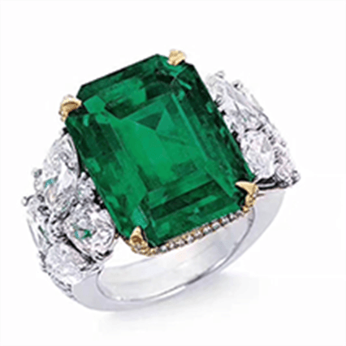
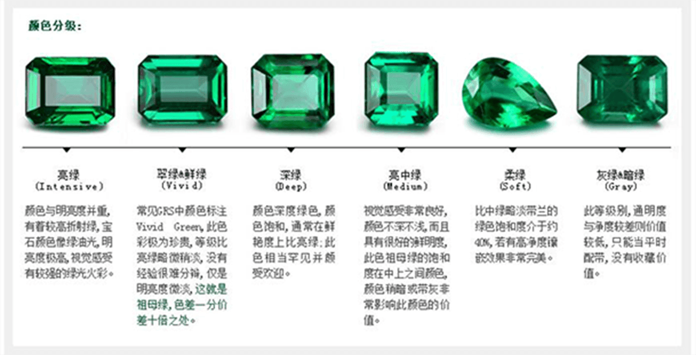

祖母绿具有许多特质，但有色宝石专业人士普遍认为祖母绿最重要的是颜色。 千百年来，祖母绿一直是有色宝石种类中标准的绿色宝石。
和其他有色宝石一样，它也需要训练有素的专业人士来鉴定其中的微妙变化，因为这些变化可以让价值产生显著差异。 较高品质的祖母绿尤其如此。
最珍贵的祖母绿成色为蓝绿色至纯绿色，拥有鲜艳的色彩饱和度，色调不会太暗。 最有价值的祖母绿是极度透明的。 它们色泽均匀，无肉眼可见的颜色区域。 如果色彩过黄或过蓝，这种宝石不是祖母绿，而是不同品种的绿柱石，其价值也会相应下降。
上等祖母绿呈现的饱和的绿色是自然界中其他物体无法与之媲美的。
铬、钒、铁等微量元素为祖母绿赋予了迷人的色彩。 每种元素的存在或缺失，以及在宝石中的相对含量都将决定祖母绿晶体的确切颜色。
祖母绿的外观有时与矿场位置密切相关。 据说哥伦比亚的祖母绿拥有偏暖色调、更饱和的纯绿色， 而赞比亚出产的祖母拥有偏冷色调的较深蓝绿色。 虽然有这些理论，但事实是，不同产地的祖母绿可能拥有相同外观。
祖母绿通常含有肉眼可见的内含物。 正因如此，交易者和一些消费者了解并接受祖母绿中内含物的存在。 没有肉眼可见内含物的祖母绿极其罕见，因此也尤其珍贵。
祖母绿内含物通常被描述成“苔藓状”或“花园般”的。 他们有时也被称为“jardin”（在法语中指花园）。
没有肉眼可见内含物的祖母绿皆为稀世珍宝。
— Tino Hammid (ICA) 友情提供
对彩色宝石而言，透明度和净度有着密切的联系。 祖母绿尤其如此。 业内普遍会接受含有肉眼可见内含物的顶级祖母绿。 但是，如果内含物可能降低亮度或透明度，它们也会降低祖母绿的价值。
10.03 克拉的宝石是璀碧苣祖母绿。 其内含物形成星状图案的射线。 这种良好切割的凸圆形更呈现出其与众不同的特性。 - Colombian Emeralds Co. 友情提供
早在 2000 年，GIA 鉴定所已开始提供祖母绿净度处理分类服务。 鉴定所检验了一块未镶嵌的宝石，提供了一 份祖母绿证书，证书中包含了一份宝石的数字彩色图像。 该报告将净度等级描述为轻度、中度、显著。 GIA 鉴定所强调，使用分类系统的目的仅在于评价处理的水平，而不是为宝石提供整体净度等级。
切割师选择切工时，必须考虑原石的颜色、坚固性和内含物。 错误切割可能导致重量损失，让原本价值连城的宝石大打折扣。祖母绿晶体的四个特点给切割带来巨大难度。
其名称所暗示的，祖母绿切工是最常见的祖母绿宝石切割方式。 — Ronald Ringsrud Co. 友情提供
首先，几乎所有的祖母绿都拥有明显的裂缝（行业中有时也称之为龟裂纹）。 切磨师必须精心设计切工过程，尽量降低这些裂缝对宝石成品的影响。
第二个因素部分是由于固有的裂隙：祖母绿比刚玉之类的宝石更易碎。 这使得他们很容易在切工、抛光和镶嵌过程中受到损坏，甚至不够谨慎细心的日常佩戴也会导致损坏。 祖母绿切工有助于帮助防止损害，因为易碎的边角经过刻面，可以为镶爪提供一个相对平稳的位置。
第三，颜色是决定祖母绿价值的首要因素，因此切工须最大限度地衬托出宝石的色调、色彩和饱和度。 切磨师可以通过调整祖母绿的比例和刻面数量来影响色彩。 如果是颜色更浅的宝石，切磨工可以采用深切工、小桌面和更少刻面来加深其颜色；与此对应，颜色更深的宝石可通过浅切工、大桌面和更多刻面来减淡颜色。
第四，大量祖母绿晶体拥有的蓝绿色至黄绿色二色性要求切磨工调整桌面，使之与晶体长边垂直。 这样一来，宝石呈现的更多是蓝绿色，这大大迎合了祖母绿 爱好者的需求。
哥伦比亚原石的切工最具挑战性，因为成形期间染色剂会分散。 越靠近表面，颜色越饱和。 如果没有一丝不苟的规划和切工，宝石成品会比原材料的颜色浅得多。
成型祖母绿拥有各种不同的尺寸。 博物馆和私人藏品中有重达数百克拉的祖母绿。 而与此相对的另一个极端则是重量还不足一克拉的祖母绿。
津巴布韦的 Sandawana 矿场以出产微小而颜色鲜艳的有色宝石而闻名世界。 这里出产的祖母绿小至1 毫米见方，但它们依然拥有十分饱和的绿色。 该矿场切工钻石的平均重量约为 0.05 至 0.25 克拉，很少超过 1.50 克拉。 流行饰品的大小通常介于这两者之间。
最小的尺寸范围为 1 毫米至 5 毫米，重量从 0.02 到 0.50 克拉不等。而 1 至 5 克拉的宝石通常用作主石，广受消费者欢迎。 一些奢华珍贵的珠宝可能使用重达 20 克拉的祖母绿。
在品质相同的情况下，祖母绿的价格随着尺寸增加而显著上升。
祖母绿自开采之日起，就发现它与生俱来就多瑕、多裂。但面对如此娇艳诱人的绿色，老祖们对它爱恨交织。经过反复的优化探索，聪明的老祖们发现：祖母绿注油以后在后续的切磨中都会有效保护宝石，以至于它不会轻易碎裂。所以当原石被开采出来的时候，矿工们就会把祖母绿及时浸在随身携带的油罐里。99%的祖母绿都是有油的，无油祖母绿少之又少，富春拍卖价格经常达到数千万。
母绿项链的主石重 61 克拉。
— Ronald Lee Schultz 友情提供